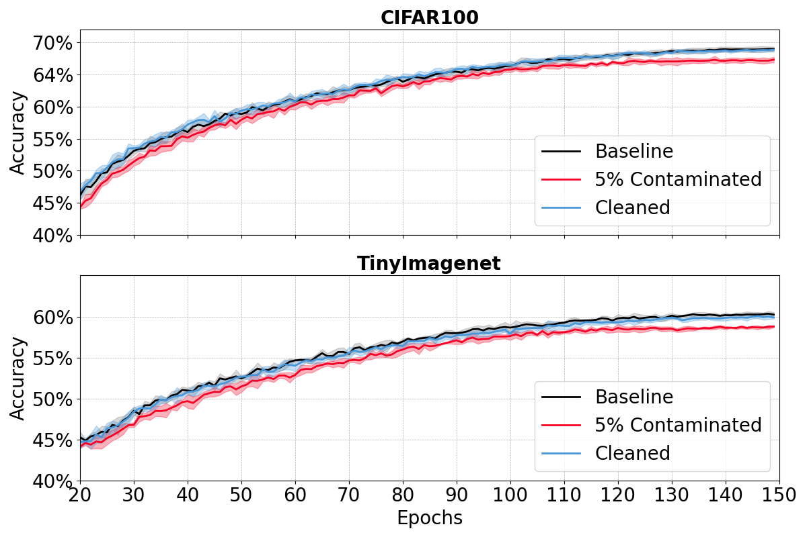
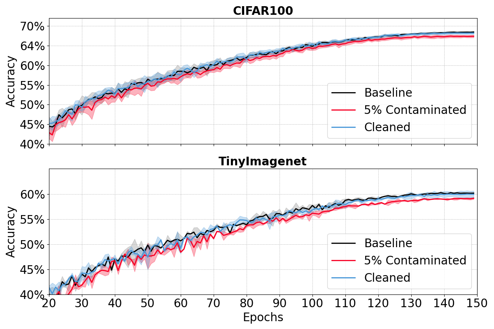

Research project · Image classification
Lightweight Dynamic Annotation Error Detection via Probability Discrepancy Aggregation
Identify potentially faulty labels by tracking persistent disagreement between a network’s predictions and its training annotations.
From training to inspection
One classifier. A persistent score for each image.
- 01Train
Train an image classifier using the annotated dataset.
- 02Measure
Track the discrepancy between predictions and assigned labels.
- 03Aggregate
Smooth sample scores across training epochs.
- 04Inspect
Rank samples and review potentially erroneous annotations.
01 / Overview
Data quality, observed during learning.
Classification performance depends heavily on annotation quality. Mislabeled images and ambiguous annotations can degrade model accuracy, while finding these problems manually is resource-intensive.
This work proposes a lightweight, training-time annotation error detection method inspired by information-based sample selection in reinforcement learning. It tracks persistent probability discrepancies across epochs to identify samples whose annotations remain inconsistent with the classifier’s predictions.
The study evaluates the method on CIFAR-100 and Tiny ImageNet with EfficientNet-B1, MobileNetV3-Large, and ResNet-50. The practical goal is to help experts focus their review on a smaller, ranked set of potentially problematic samples. Difficult but correctly labeled images can also receive high scores, so human review remains important.
02 / Results
Validation accuracy.
The manuscript compares training on the original dataset, training with 5% label noise, and training after removing the top-ranked samples. Values below are mean accuracy (%) ± one standard deviation across six independent runs.
| Architecture | Baseline | 5% noise | Cleaned |
|---|---|---|---|
| ResNet-50 | 76.69 ± 0.32 | 74.52 ± 0.23 | 75.93 ± 0.30 |
| MobileNetV3-Large | 68.52 ± 0.22 | 67.59 ± 0.24 | 68.40 ± 0.26 |
| EfficientNet-B1 | 69.09 ± 0.36 | 67.49 ± 0.41 | 68.97 ± 0.26 |
| Architecture | Baseline | 5% noise | Cleaned |
|---|---|---|---|
| ResNet-50 | 64.24 ± 0.27 | 61.96 ± 0.30 | 63.31 ± 0.24 |
| MobileNetV3-Large | 60.47 ± 0.27 | 58.98 ± 0.28 | 60.08 ± 0.38 |
| EfficientNet-B1 | 60.44 ± 0.30 | 59.06 ± 0.15 | 60.20 ± 0.26 |
These are the manuscript’s reported values, not results generated by this website.




03 / Data
Data availability
The original generated experimental result files and noise-selection files were not retained and are unavailable. The tables and plots above preserve the aggregate results reported in the manuscript. The code repository provides code for running new experiments.
Benchmark references: Alex Krizhevsky, Learning Multiple Layers of Features from Tiny Images, 2009; Ya Le and Xuan Yang, Tiny ImageNet Visual Recognition Challenge, 2015.
04 / Reference
Cite this project.
This project accompanies the manuscript named above. The entry below identifies the project page and research code; journal publication details will be added when available.
@misc{balogh_dod_2026,
author = {Balogh, Csan{\'a}d L. and K{\H{o}}v{\'a}ri, B{\'a}lint
and B{\'e}csi, Tam{\'a}s},
title = {Lightweight Dynamic Annotation Error Detection
via Probability Discrepancy Aggregation},
year = {2026},
url = {https://kp-labs-bme.github.io/dod/},
note = {Research code and project page}
}